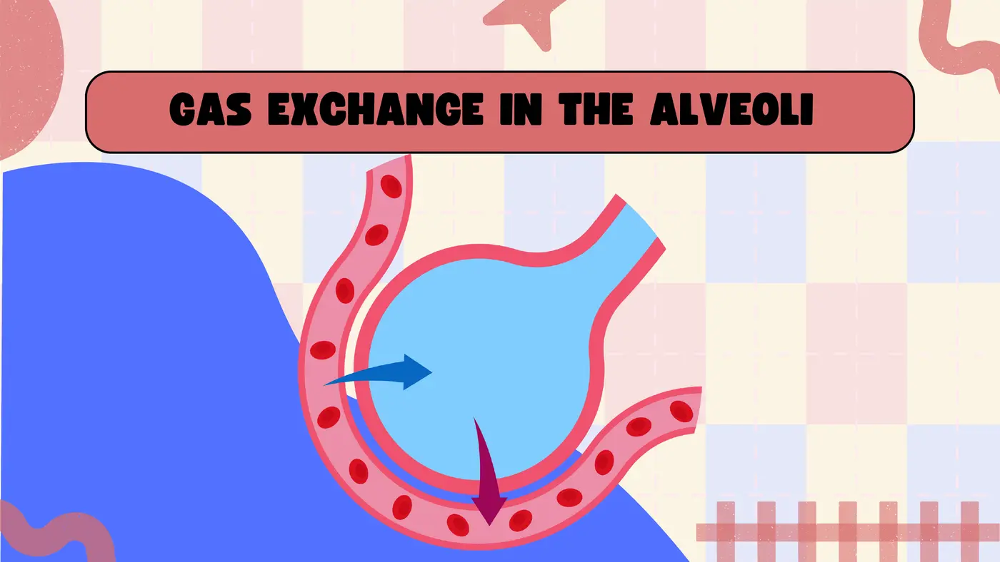
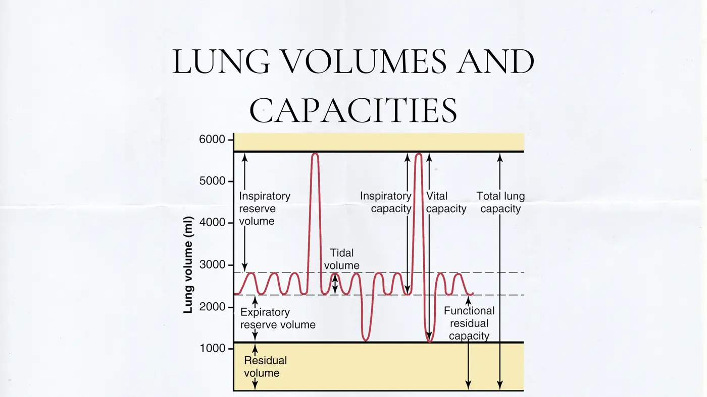
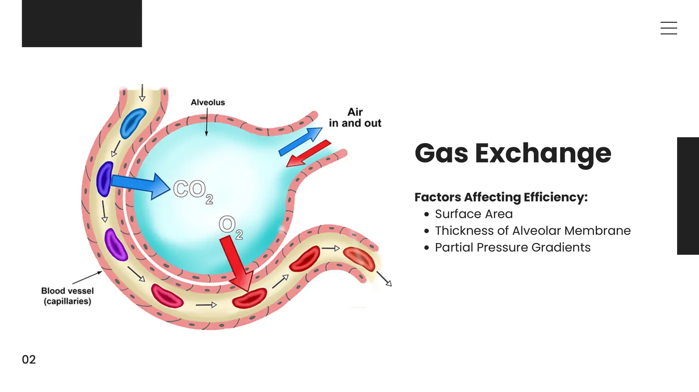
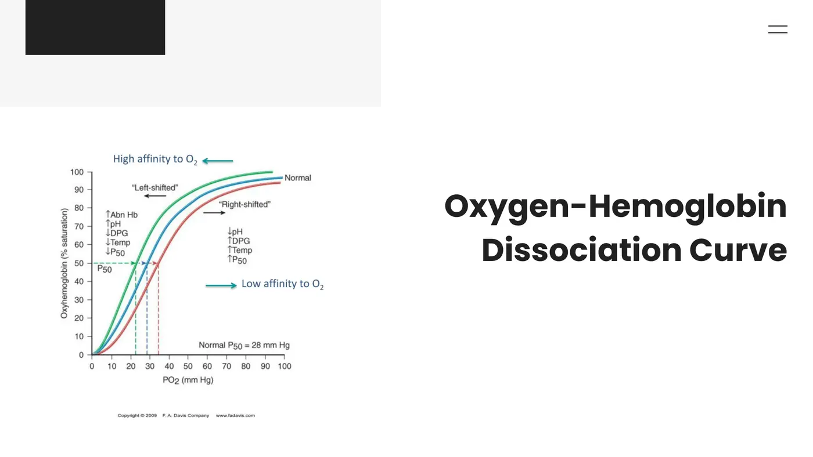
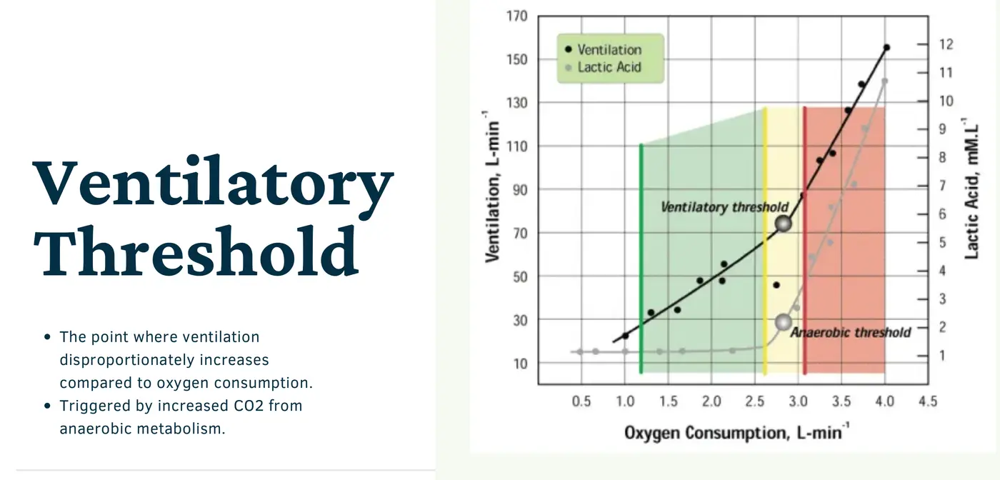
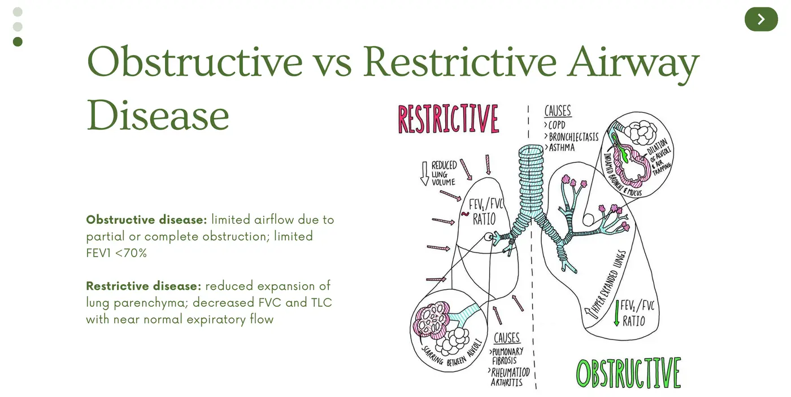
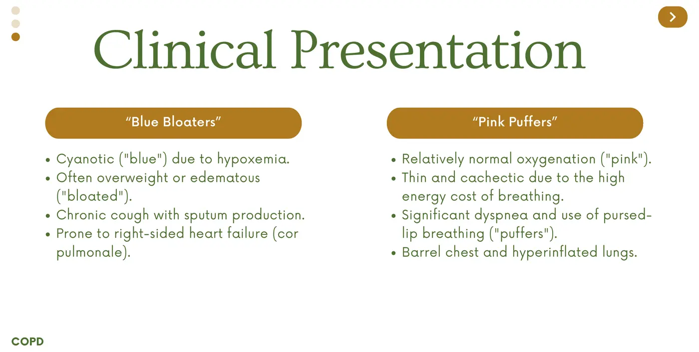
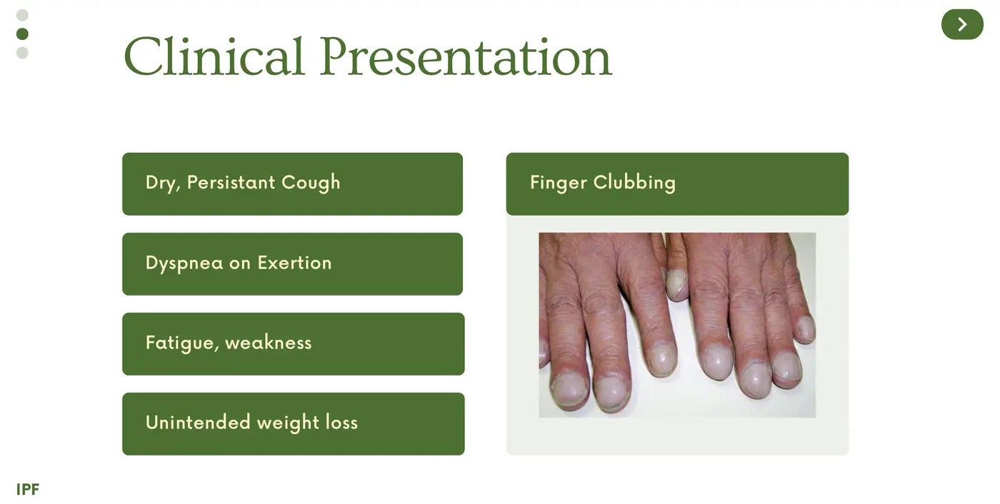
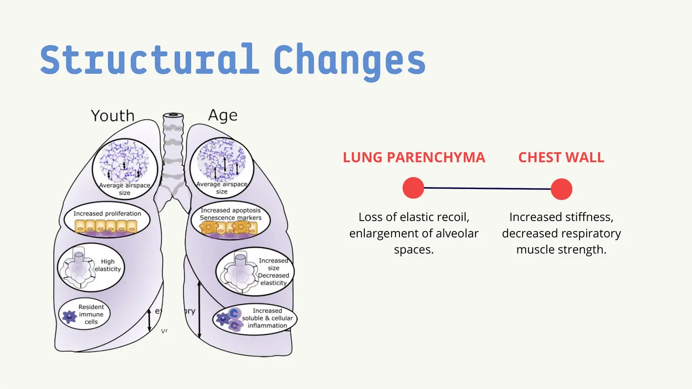

Courses › Human Physiology › Module 4
Human Physiology · 6131
Module 4 — The Respiratory System
Topics: 4.1 Introduction to the Respiratory System (4 lectures) • 4.2 Common Conditions of the Respiratory System • 4.3 The Aging Respiratory System
📖 How to Use These Notes
- Best used with the lecture playing — keep these open, follow along, and add your own notes as you watch
- Lecture banners mark the start of each topic and run in the same order as the videos
- 🎙 Callouts = direct insights from the instructor's transcript
- ★ Tips = exam-relevant content or things the instructor told you to prepare
- Figures are taken directly from the module's slide decks
- Each topic ends with its own Quick-Reference Glossary
- Written from last year's recordings — if a lecture has been re-recorded or resequenced, Canvas wins
- Watch this module's lecture videos (Dr. K) in your own Canvas module — video links are cohort-specific
- Assessment: the Respiratory Case Study assignment; the sync session works five case vignettes (copies in this Drive)
- This module hands off directly to Cardiopulm — the volumes, the curve, and the obstructive/restrictive split all return there
TOPIC 4.1
Introduction to the Respiratory System
1. The Airway and the Alveolus
- Three jobs: gas exchange, ventilation, and blood-pH regulation via CO₂. The path: mouth/nasal cavity (warming the air) → trachea (the upper/lower tract divider) → two mainstem bronchi → bronchioles → millions of alveoli.

- Alveoli are built for diffusion: walls literally one cell thick, a huge surfactant-moistened surface area, and a capillary jacket. O₂ diffuses in, CO₂ diffuses out for the next exhale. The diaphragm (a supporting structure): contracts and descends to inhale; relaxes and rises to exhale — exhalation is normally passive; forced exhalation recruits extra muscle.
2. Mechanics of Breathing and the Volumes
- Inhalation: diaphragm down + intercostals out → thoracic volume up → intrapulmonary pressure down → air in. Exhalation reverses it passively. Accessory muscles (SCM, scalenes) join only in labored breathing.

| Measure | What it is |
|---|---|
| Tidal volume (TV) | Air moved by one normal, everyday breath |
| Vital capacity (VC) | Maximum exhale after a deep inhale — TV + inspiratory reserve + expiratory reserve |
| Residual volume (RV) | Air left after maximal exhalation — you can NEVER blow it all out, and that's what keeps the lungs from collapsing |
| FEV1 / FVC | Forced expiratory volume in 1 s / forced vital capacity — the SPEED measures; they run Topic 4.2's obstructive-restrictive split |
- Measured by spirometry (TV, VC, FEV1) and peak flow (max exhalation speed). Abnormal volumes flag asthma, COPD, and restrictive disease — and give PTs the are-we-actually-improving numbers.
3. Gas Exchange, Transport, and Control

- Exchange efficiency rides on surface area, membrane thickness, and partial-pressure gradients — bigger and thinner = better. O₂ transport = hemoglobin → oxyhemoglobin. Two classic failures: anemia (enough oxygen, not enough red cells to carry it — supplemental O₂ misses the problem) and CO poisoning (carbon monoxide outcompetes O₂ for hemoglobin).
- CO₂ rides three ways: (1) the main route — CO₂ + H₂O → carbonic acid (carbonic anhydrase, abundant in RBCs) → dissociates to bicarbonate + H⁺ (the blood-pH keystone); (2) a small fraction binds hemoglobin directly (carbaminohemoglobin); (3) ~5% dissolves free in plasma.

| RIGHT shift — release O₂ | LEFT shift — hold O₂ |
|---|---|
| ↑temperature · ↑CO₂ · ↓pH (acidosis) | ↓temperature · ↓CO₂ · ↑pH (alkalosis) |
| ↓Hemoglobin affinity → oxygen unloaded to the tissues that need it | ↑Affinity → oxygen binds and stays bound |
- Curve geography: flat upper portion (PO₂ > ~60 mmHg — hemoglobin nearly saturated; changes barely matter) vs the steep middle (20–60 mmHg) where small PO₂ shifts move saturation a lot. Dr. K: this is an important slide — sit with it.
★ Control of breathing — the exam favorite
- Neural: the medulla sets the basic rhythm; the pons modulates rate and depth (brain injury there = altered breathing)
- Chemical: HIGH CO₂ / low pH is THE driver of breathing rate — not low O₂ (low O₂ stimulates, but far less). Don't fall for the common misconception
- Hyperventilation → CO₂ blown off → respiratory alkalosis; hypoventilation → CO₂ retained → respiratory acidosis
4. The Respiratory System and Exercise

- In exercise, alveolar ventilation rises in step with metabolic demand — until the ventilatory threshold, where ventilation rises disproportionately to VO₂ (anaerobic metabolism's extra CO₂). You feel it as breathlessness; PTs use it to dose programs and monitor athletes.
- Connect the dots (her favorite move): past VT, lactic acid + H⁺ + CO₂ pile up → pH falls → the curve right-shifts = the Bohr effect → hemoglobin dumps O₂ to the working muscle — “Take it. I don't want it anymore.” That's why you can be gasping AND still pushing. Training at/just below VT improves delivery and utilization.
- Two ceilings: pulmonary diffusion capacity (a real limiter in elite endurance) and respiratory muscle fatigue (diaphragm + accessories tire; endurance training delays it; respiratory muscle training helps chronic respiratory patients).
| Hyperpnea — normal | Hyperventilation — treat it |
|---|---|
| ↑Rate + depth matched to demand (exercise, stairs) | Breathing beyond CO₂-removal needs → low CO₂ → dizziness, tingling |
| Physiologic. No intervention | Paper-bag rebreathing (re-inhale CO₂!), relaxation, treat the cause — usually anxiety, occasionally metabolic |
Topic 4.1 — Quick-Reference Glossary
| Term | Definition |
|---|---|
| Alveolus | One-cell-thick, capillary-wrapped exchange sac (millions) |
| TV / VC / RV | Normal breath / max exhale after max inhale / the un-exhalable reserve |
| FEV1, FVC | The speed measures — Topic 4.2's diagnostic axis |
| Bicarbonate pathway | CO₂ + H₂O → H₂CO₃ → HCO₃⁻ + H⁺ — CO₂'s main ride and pH's lever |
| Right vs left shift | Acid/hot/CO₂-rich = release; alkaline/cold = hold |
| Medulla / pons | Rhythm generator / rate-and-depth modulator |
| CO₂ drive | High CO₂, not low O₂, sets breathing rate |
| Ventilatory threshold + Bohr effect | Where breathing outruns VO₂ — and hemoglobin starts donating |
| Hyperpnea vs hyperventilation | Demand-matched vs excessive breathing |
TOPIC 4.2
Common Conditions of the Respiratory System

| OBSTRUCTIVE — can't get air OUT | RESTRICTIVE — can't get air IN |
|---|---|
| Narrowed/blocked airways | Stiff lungs, ↓compliance — “blowing up a balloon underwater” |
| ↓FEV1 and ↓FEV1/FVC ratio on PFTs | ↓FVC + ↓total lung capacity, normal-or-high FEV1/FVC |
| Lost ELASTICITY → lungs stay over-inflated | Lost COMPLIANCE → lungs won't expand |
1. COPD
- An umbrella over progressive airflow-limiting diseases: emphysema (alveolar wall destruction → big inefficient air spaces, lost surface area, lost elastic recoil → exhalation collapse → air trapping) and chronic bronchitis (bronchial inflammation + mucus overproduction → thickened, narrowed airways; defined by a productive cough ≥3 months in 2 consecutive years).

| “Blue bloater” — chronic-bronchitis-dominant | “Pink puffer” — emphysema-dominant |
|---|---|
| Cyanotic (chronic hypoxemia — lips, fingertips) | Near-normal color; severe dyspnea first and always |
| Edema + weight gain from cor pulmonale (right-sided heart failure) | Pursed-lip breathing (self-made airway pressure prevents collapse) + puffed cheeks |
| Productive morning cough, sedentary, frequent infections/admissions | Thin/cachectic (breathing burns the calories), barrel chest, accessory-muscle hypertrophy, minimal dry cough |
- (Dr. K's caveat on the labels: outdated and arguably offensive — used here only because the pattern recognition genuinely helps.) PT toolkit for COPD: airway clearance techniques, breathing exercises (diaphragmatic, pursed-lip), and pulmonary rehab — exercise + education + behavioral therapy, with big real-world quality-of-life gains.
2. Asthma
- Chronic airway inflammation with REVERSIBLE obstruction — attacks (triggered by exercise, stress, cold air, allergens) inflame and narrow the airways while mucous glands enlarge and hypersecrete; bronchodilators/corticosteroids reverse it. Unmanaged, it steals daily function — and severe cases kill. PT: learn the patient's specific triggers, modify exercise, teach breathing techniques, and teach correct inhaler use — TV demonstrates it wrong and most patients copy TV.
3. Restrictive Diseases

| Disease | Pathophys | Presentation | PT role |
|---|---|---|---|
| IPF (idiopathic pulmonary fibrosis) | Progressive interstitial scarring → membrane no longer one cell thick → diffusion falls | Dyspnea on exertion → at rest; DRY persistent cough (vs bronchitis' wet one); fatigue, weight loss; finger clubbing late | Breathing techniques, pulmonary rehab, energy conservation, oxygen (nearly universal eventually), psychosocial support — prognosis ~3–5 years |
| Pneumonia | Acute alveolar infection (bacteria/virus/fungus) → alveoli fill with pus + fluid → exchange compromised | Productive cough, fever, chills, dyspnea; exam: rales/crackles + dull percussion | Airway clearance, breathing exercises, early mobility (prevents atelectasis), effective-cough education, graded return to activity |
Topic 4.2 — Quick-Reference Glossary
| Term | Definition |
|---|---|
| FEV1/FVC rule | Low ratio = obstructive; preserved ratio with low TLC = restrictive |
| Air trapping | Emphysema's exhalation collapse — the barrel chest's origin |
| 3-month/2-year rule | Chronic bronchitis' defining cough |
| Cor pulmonale | Right-heart failure secondary to lung disease — the bloat |
| Pursed-lip breathing | Self-generated back-pressure that splints airways open |
| Reversible obstruction | Asthma's defining feature |
| Finger clubbing | Late IPF nail-bed widening |
| Rales/crackles | Pneumonia's auscultation signature |
TOPIC 4.3
The Aging Respiratory System

| Change | Consequence |
|---|---|
| Parenchyma loses elastic recoil + alveolar spaces enlarge (“senile emphysema”) | Natural aging — distinct from smoking-driven emphysema |
| Chest wall stiffens + respiratory muscles weaken | Reduced lung volumes |
| ↓Vital capacity, ↑residual volume | Less usable breath |
| ↓Alveolar surface area + thickened alveolar-capillary membrane | ↓Diffusion capacity → less efficient exchange → lower arterial O₂, hypoxemia risk |
| ↓Ciliary beat frequency + thicker mucus + weaker macrophages/neutrophils | Mucus buildup + pneumonia and bronchitis susceptibility |
- Net effect: higher incidence of COPD, pneumonia, and pulmonary fibrosis with age. PT levers: pulmonary rehab (breathing exercises + respiratory muscle training), ACSM-guided aerobic + strength work, vaccination advocacy, early intervention, and interprofessional coordination — even in older adults who never smoked, senile emphysema makes this worth screening.
📚 Required reading — Topic 4.3
Topic 4.3 — Quick-Reference Glossary
| Term | Definition |
|---|---|
| Senile emphysema | Age-driven alveolar enlargement — no cigarettes required |
| Diffusion-capacity decline | Smaller surface + thicker membrane |
| Mucociliary slowdown | Slower cilia + thicker mucus = infection risk |
| Aging PT levers | Pulmonary rehab, ACSM dosing, vaccines, early intervention |
SYNC SESSION
Respiratory Case Vignettes
The sync session works five case vignettes (full handout in this course's folders in this Drive). They test exactly the connections this module builds:
| Vignette | What it tests |
|---|---|
| 1. 30-y/o at 12,000 ft: SpO₂ 89%, pH 7.48, PaO₂ 60, PaCO₂ 30 | Altitude hypoxemia → curve shifts, 2,3-BPG adaptation, tissue unloading — and why the pH says respiratory ALKALOSIS (blowing off CO₂) |
| 2. 55-y/o with ALS, increasing dyspnea | Respiratory muscle weakness → a RESTRICTIVE pattern without lung disease |
| 3–5. Further transport/condition applications | Bohr effect, obstructive vs restrictive reasoning, acid-base logic |
✅ Module 4 assessments
- Respiratory Case Study assignment
- Harmonize “Muddy Points” — optional
- Check your own Canvas for due dates